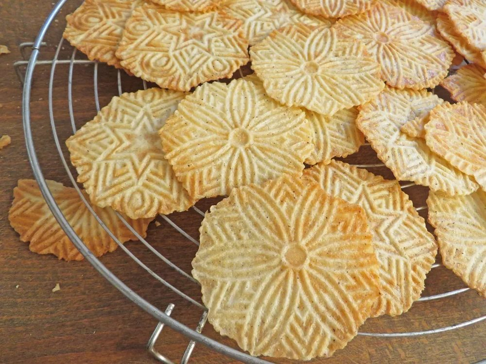
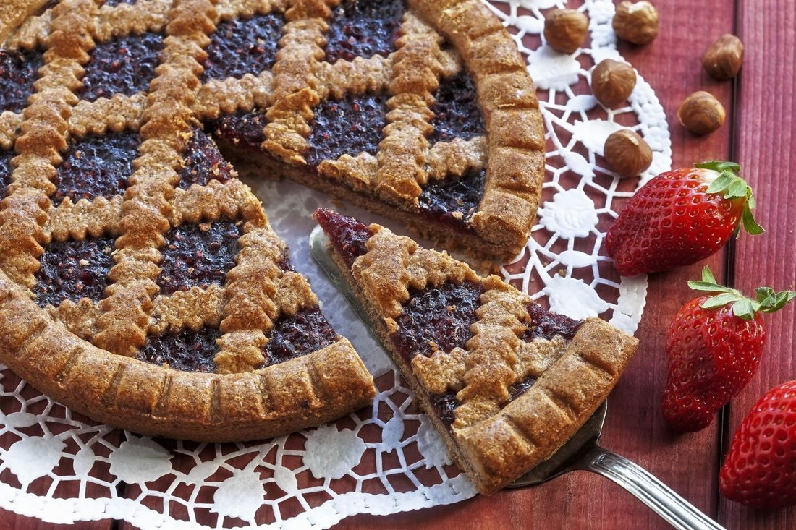
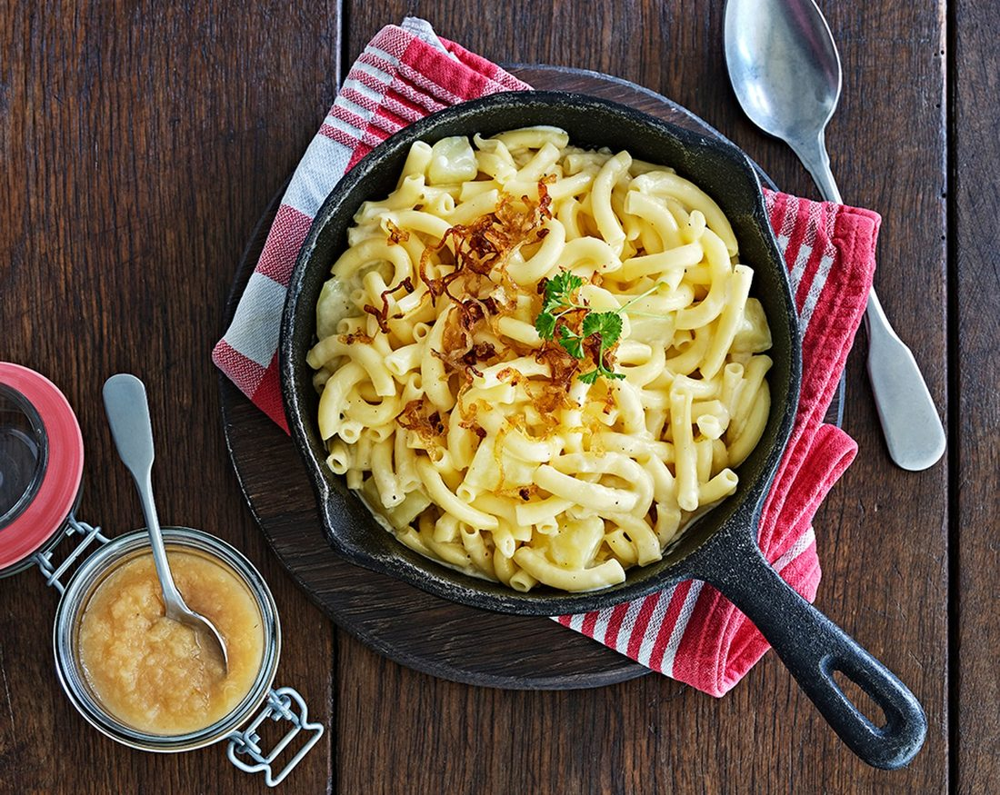
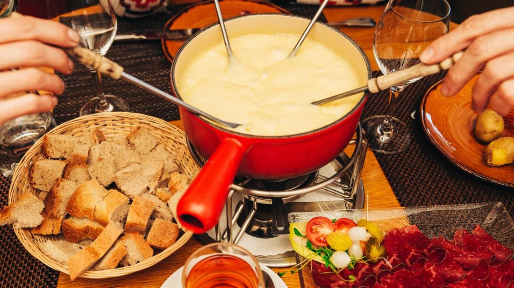
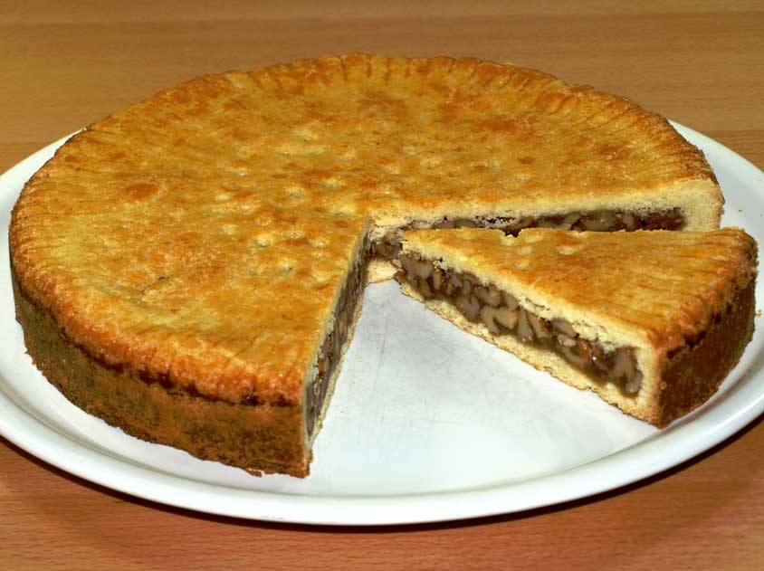

Home / Chuchichäschtli Chochbuech
Kitchen Kupboard KookbookChuchichäschtli Chochbuech
The SJVSC Chuchichäschtli Ladies previously had two cookbooks, with recipes from Swiss ladies all up and down the West Coast.
The books
The first book had a white cover and the second a red cover. We are creating a new one with lots of favourite recipes from the old cookbooks and many new recipes.
Members are asked to help by letting the committee know their most favourite recipes from each cookbook — include the book number (white is one, red is two) and the page number you would like to see in the third book. Contact Cathy Quinn at sjvsc.membership@gmail.com.
What is in it
- Braetzli — a delectable homemade Swiss cookie, made, tried and tested by the generations of Swiss in our club.
- Schnitzel — another favourite, from different cantons.
- Linzertorte — many different varieties and methods making this scrumptious pastry, shared from so many kitchens and generations. A favourite treat that can be bought at the dessert auction at the Schwinger Dinner.
- Älplermagronen — a favourite of anyone attending the Swiss Club, and on the menu at a Fall Schwingfest. Made with potatoes and Swiss cheese, topped with crispy onions.
- Cheese fondue — you can’t go wrong incorporating your own Gruyère, Appenzeller or Raclette cheese into a recipe.
- Bündner Nusstorte — a walnut pie that will be sure to impress your guests.
Details
- Previous booksTwo — a white cover and a red cover
- The thirdFavourites from both, plus new recipes
- Suggest a recipeCathy Quinn · sjvsc.membership@gmail.com
- FundedThe 1985 commercial kitchen, by this committee




